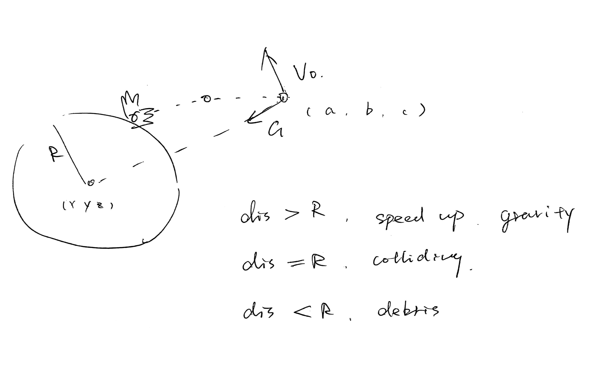
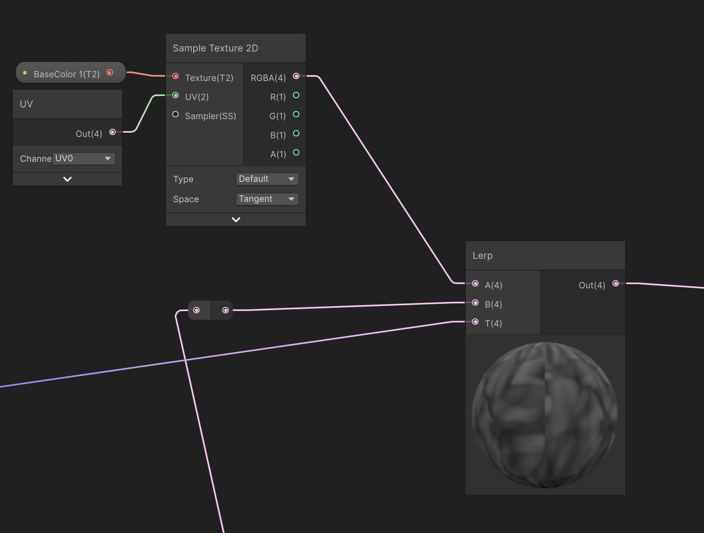

Colliding Simulation Document
Brief
我计划在 Unity 中模拟一个陨石撞击地球的场景，整个过程分为三个阶段：
- 撞击前：陨石接近地球时，被地球的重力场捕获，轨迹逐渐偏转。
- 撞击时：陨石与地表发生剧烈碰撞，冲击力使地面形成一个 crater，同时陨石本身碎裂并向外飞散。
- 撞击后：冲击产生的气流扩散开来，地表温度上升，原本的地面逐渐变为岩浆状态。

Gravity Field
在一般的人类视角中，重力总是"向下"的，这也是 Unity 默认物理系统所模拟的方向。但在星球尺度下，这种假设不再适用。对于"陨石 vs 地球"这种量级的系统，陨石所受的引力始终指向地球的球心，而不是某个固定的"下方"。
根据万有引力定律，陨石的加速度可以表示为：a = GM / r²，
其中 G 为引力常数，M 为地球质量，r 为陨石与地心之间的距离。由此可知，唯一随时间变化的量是 r，也正是它决定了陨石运动轨迹的关键。
using Unity.VisualScripting;
using UnityEngine;
using UnityEngine.UIElements;
public class GravityField : MonoBehaviour
{
//G*M constant
public float EarthMass = 1.0f;
public float Gconstant = 1.0f;
private float Radius;
private Vector3 PosE;
private Vector3 PosM;
private Vector3 DistanceVector;
private Vector3 Dir;
private float Dis;
private Vector3 Gravity;
void Start()
{
GameObject earthObj = GameObject.Find("Earth");
PosE = earthObj.transform.position;
}
void OnTriggerEnter (Collider other)
{
if (other.CompareTag("Target")) //meteorites have the tag "Target"
{
Rigidbody Meteoroid = other.GetComponent<Rigidbody>();
}
}
void OnTriggerStay(Collider other)
{
if (other.CompareTag("Target"))
{
Rigidbody Meteoroid = other.GetComponent<Rigidbody>();
PosM = Meteoroid.transform.position;
DistanceVector = PosE - PosM;
Dir = DistanceVector.normalized;
Dis = Vector3.Distance(PosE, PosM);
float GM = Gconstant * EarthMass;
float a = GM / (Dis * Dis);
Gravity = a * Dir;
Meteoroid.AddForce(Gravity, ForceMode.Acceleration);
}
}
}陨石的初速度
在实现上，我为陨石施加了一个初始的Impulse 类型Force，以模拟其进入地球引力场后的运动状态。通过这种方式，陨石在运行过程中会呈现出被地球引力捕获的曲线轨迹。然而，不同的初始条件会导致截然不同的结果：当初始力过大或方向偏离时，陨石可能飞出地球的引力范围，摆脱引力束缚；而在某些理想情况下，陨石会被引力捕获，成为地球的卫星，以地球为椭圆轨道的一个焦点，形成类似天体力学中的轨道运动。
using UnityEngine;
public class AddForce : MonoBehaviour
{
public Vector3 force = new Vector3(0, 0, 0); // 力的方向和大小
public ForceMode mode = ForceMode.Impulse; // 推一把
void Start()
{
Rigidbody rb = GetComponent();
if (rb != null)
{
rb.AddForce(force, mode);
}
}
}
Deform
我首先参考了以下视频教程，并以其中展示的代码为基础：
运行速度优化
虽然物理模拟的目标是尽可能接近真实，但在实际实现中遇到了一些性能瓶颈。 起初我没有注意到地球模型mesh的面数已经超过上万。原本的代码在每次撞击时，都会遍历所有顶点来计算地表的凹陷效果。 这种算法在单次碰撞时尚可运行，但当场景中加入了超过 50 个陨石碎片后，碰撞次数急剧上升，导致性能急剧下降——最终甚至会造成 Unity 崩溃或闪退
foreach (ContactPoint point in collision.contacts)
{
for (int i = 0; i < meshVerticies.Length; i++)
{
Vector3 vertexPosition = meshVerticies[i];
Vector3 pointPosition = transform.InverseTransformPoint(point.point);
float distanceFromCollision = Vector3.Distance(vertexPosition, pointPosition);
float distanceFromOriginal = Vector3.Distance(startingVerticies[i], vertexPosition);
// If within collision radius and within max deform
if (distanceFromCollision < deformRadius && distanceFromOriginal < maxDeform)
{
float falloff = 1 - (distanceFromCollision / deformRadius) * damageFalloff;
float xDeform = pointPosition.x * falloff;
float yDeform = pointPosition.y * falloff;
float zDeform = pointPosition.z * falloff;
xDeform = Mathf.Clamp(xDeform, 0, maxDeform);
yDeform = Mathf.Clamp(yDeform, 0, maxDeform);
zDeform = Mathf.Clamp(zDeform, 0, maxDeform);
Vector3 deform = new Vector3(xDeform, yDeform, zDeform);
meshVerticies[i] -= deform * damageMultiplier;
}
}
}
所以我将其简化为仅计算第一次撞击
[Range(0, 10)]
public float deformRadius = 0.2f;
[Range(0, 10)]
public float maxDeform = 0.1f;
[Range(0, 1)]
public float damageFalloff = 1;
[Range(0, 10)]
public float damageMultiplier = 1;
[Range(0, 100000)]
public float minDamage = 1;
private MeshFilter filter;
private MeshCollider coll;
private Vector3[] startingVerticies;
private Vector3[] meshVerticies;
private Dictionary> vertexGrid;
private bool hasDeformed = false;
void OnCollisionEnter(Collision collision)
{
// only the first time collision
if (hasDeformed)
return;
float collisionPower = collision.impulse.magnitude;
if (collisionPower > minDamage)
{
ContactPoint point = collision.contacts[0];
Vector3 pointPosition = transform.InverseTransformPoint(point.point);
Vector3 impactNormal = transform.InverseTransformDirection(point.normal);
// 遍历撞击点周围的格子
Vector3Int centerCell = GetCell(pointPosition);
for (int x = -1; x <= 1; x++)
{
for (int y = -1; y <= 1; y++)
{
for (int z = -1; z <= 1; z++)
{
Vector3Int cell = centerCell + new Vector3Int(x, y, z);
if (vertexGrid.ContainsKey(cell))
{
foreach (int i in vertexGrid[cell])
{
Vector3 vertexPosition = meshVerticies[i];
float distanceFromCollision = Vector3.Distance(vertexPosition, pointPosition);
float distanceFromOriginal = Vector3.Distance(startingVerticies[i], vertexPosition);
// 在变形半径内且未超过最大变形量
if (distanceFromCollision < deformRadius && distanceFromOriginal < maxDeform)
{
// 计算衰减
float normalizedDistance = distanceFromCollision / deformRadius;
float falloff = Mathf.SmoothStep(1, 0, normalizedDistance);
float deformAmount = falloff * damageMultiplier;
// 沿法线方向变形
meshVerticies[i] += impactNormal * deformAmount;
}
}
}
}
}
}
UpdateMeshVerticies();
hasDeformed = true;
}
}
void UpdateMeshVerticies()
{
filter.mesh.vertices = meshVerticies;
coll.sharedMesh = filter.mesh;
}
并且使用三维空间的哈希算法来缩小顶点遍历范围，理论上来说它把空间分割成多个以deformRadius为边长的正方体。这样一来，在计算地表凹陷时，只需要检测撞击点所在及其周围相邻的，共计27个正方体中的顶点，并在衰减范围内执行变形计算即可。（不过我还在尝试弄懂这部分，我不太确定代码是否真的起作用了，以及这是否是最简单的方法）。意外了解到有许多MMO游戏在采用这种算法。
[Range(0, 10)]
public float deformRadius = 0.2f;
private MeshFilter filter;
private Vector3[] meshVerticies;
private Dictionary> vertexGrid;
private float cellSize;
void Start()
{
filter = GetComponent();
meshVerticies = filter.mesh.vertices;
cellSize = deformRadius;
vertexGrid = new Dictionary>();
BuildSpatialGrid();
}
void BuildSpatialGrid()
{
for (int i = 0; i < meshVerticies.Length; i++)
{
Vector3Int cell = GetCell(meshVerticies[i]);
if (!vertexGrid.ContainsKey(cell))
{
vertexGrid[cell] = new List();
}
vertexGrid[cell].Add(i);
}
Debug.Log($"空间网格构建完成：{meshVerticies.Length} 个顶点分配到 {vertexGrid.Count} 个格子");
}
Vector3Int GetCell(Vector3 position)
{
return new Vector3Int(
Mathf.FloorToInt(position.x / cellSize),
Mathf.FloorToInt(position.y / cellSize),
Mathf.FloorToInt(position.z / cellSize)
);
}
crater形状
原有代码里，针对crater的形状计算仅仅是线性衰减和多次叠加的钳制
// If within collision radius and within max deform
if (distanceFromCollision < deformRadius && distanceFromOriginal < maxDeform)
{
float falloff = 1 - (distanceFromCollision / deformRadius) * damageFalloff;
float xDeform = pointPosition.x * falloff;
float yDeform = pointPosition.y * falloff;
float zDeform = pointPosition.z * falloff;
xDeform = Mathf.Clamp(xDeform, 0, maxDeform);
yDeform = Mathf.Clamp(yDeform, 0, maxDeform);
zDeform = Mathf.Clamp(zDeform, 0, maxDeform);
Vector3 deform = new Vector3(xDeform, yDeform, zDeform);
meshVerticies[i] -= deform * damageMultiplier;
}
实际上的坑洞会更像一个碗形，或者碟形，所以底部形状以及和周围地面的衔接需要更平滑
if (distanceFromCollision < deformRadius && distanceFromOriginal < maxDeform)
{
float normalizedDistance = distanceFromCollision / deformRadius; // 0到1
float falloff = Mathf.SmoothStep(1, 0, normalizedDistance); // 平滑插值
float deformAmount = falloff * damageMultiplier;
meshVerticies[i] += impactNormal * deformAmount;
}
陨石碎裂
这个部分到最后也没有解决，在此列出我的一些尝试和想法。
破碎模型替换
在之前的游戏制作过程中，我曾遇到过类似的问题：当一场战斗开始时，场景中的装饰石块需要在瞬间破碎并向外爆散。当时采用的做法是：在完整模型的基础上，预先制作一个已分裂的碎片模型，并在事件触发时将其替换。由于碎片模型的法线与原模型并不完全一致，替换后会出现明显的裂缝，因此我们通过播放预设的破碎动画来掩盖这种视觉不连续。这段动画并非基于实时物理计算，而是纯粹的视觉效果。
因此，在当前的陨石撞击项目中，我希望沿用类似的替换逻辑：在碰撞发生后，将完整模型位置和速度数据传递给碎片模型，从而实现一种近似物理的破碎效果。
然而，问题出在数据传递上。碎片模型共有一个 Parent Empty Object，但由于该对象本身不具有可渲染模型，因此无法附加 Rigidbody 组件。结果是，Parent 对象无法受到 Gravity Field 的引力作用，其子碎片也无法通过父对象获得与物理系统一致的速度或碰撞响应。
不过我仍然觉得这是最合理的解决方案，只是还需要进一步研究
破碎模型整体移动
这是目前采用的方案，但仍存在一些限制。由于前文提到的 Parent Empty Object 问题，碎片无法依靠父对象整体移动。为此，我为每个碎片单独添加了 Rigidbody 和 Collider，使它们能够受到重力的作用。然而，这种方法也带来新的挑战：当碎片的速度方向与重力方向不一致时，它们很容易在空中提前分散，形成一片“迷你陨石带”。如果初速度过大，碎片甚至可能在地球引力作用下形成类似行星环的结构，就像土星的腰带一样。
真正的实时碎裂
一年前，我确实看到过类似的 Unity 插件演示，这可能也是一个可行的方向。不过仔细思考后，我发现这种方法依然需要生成大量子物体，并且将位置和速度数据进行传递，才能实现类似的效果。
Impact
结合scripts和Shader Graph
由于涉及视觉效果，我一开始打算直接编写 shader 文件，但发现这样不仅要处理运行逻辑，还需要较深的图形学知识。因此，我选择使用 Shader Graph，这样可以在更短时间内实现效果，而且更加直观。问题随之而来：如何将 scripts 中的撞击点信息暴露给 Shader Graph。解决方法是在 scripts 中将数据传递给 material，并确保 Shader Graph 中的参数命名与 scripts 中完全一致，从而实现数据同步。
// ===== 传递撞击数据到 Shader =====
// 位置：Deform.cs → OnCollisionEnter()
// 作用：将撞击点信息传递给 Shader Graph 用于视觉效果
// 需要的变量声明
[Range(0, 10)]
public float deformRadius = 0.2f;
public Vector3 LastImpactPoint { get; private set; }
public Vector3 LastImpactLocalPoint { get; private set; }
public Vector3 LastImpactNormal { get; private set; }
public float LastImpactTime { get; private set; }
public bool HasImpact { get; private set; } = false;
private Material material;
void Start()
{
Renderer renderer = GetComponent();
if (renderer != null)
{
material = renderer.material;
if (material.HasProperty("_HasImpact"))
{
Debug.Log("Material有_HasImpact属性");
}
else
{
Debug.LogError("Material没有_HasImpact属性！检查ShaderGraph");
}
}
else
{
Debug.LogError("没有Renderer组件！");
}
}
void OnCollisionEnter(Collision collision)
{
if (collision.contacts.Length > 0)
{
ContactPoint point = collision.contacts[0];
Vector3 pointPosition = transform.InverseTransformPoint(point.point);
Vector3 impactNormal = transform.InverseTransformDirection(point.normal);
// 记录撞击点信息
LastImpactPoint = point.point;
LastImpactLocalPoint = pointPosition;
LastImpactNormal = point.normal;
LastImpactTime = Time.time;
HasImpact = true;
// 传递数据到 Material
if (material != null)
{
material.SetVector("_ImpactPoint", pointPosition);
material.SetVector("_ImpactNormal", impactNormal);
material.SetFloat("_ImpactRadius", deformRadius);
material.SetFloat("_ImpactTime", Time.time);
material.SetFloat("_HasImpact", HasImpact ? 1.0f : 0.0f);
// 验证是否设置成功
float checkValue = material.GetFloat("_HasImpact");
Debug.Log($"_HasImpact设置为: {checkValue}");
}
else
{
Debug.LogError("material是null！");
}
}
}
冲击波形状
Shader Graph 可以直接获取物体空间信息，因此一旦拥有了 Impact 数据，效果的实现就非常顺利。通过时间乘以距离（time × distance），可以生成一个从撞击点不断扩大的圆形区域。基于这个圆形，再计算两个圆形的差值即可模拟冲击波的扩散效果。
最初，我并没有打算使用 Shader Graph 来制作冲击波，而是通过计算与撞击点法线垂直的平面上一个大于地球直径的圆圈，再把圆圈上点的位置投射到地球表面，然后在这些位置上放置粒子特效的prefab模拟烟雾。

using UnityEngine;
///
/// 球面圆圈投影 - 核心几何算法
///
public class SphereCircleProjection
{
private Transform sphereTransform;
private float sphereRadius;
private bool useMeshCollider = false;
private MeshCollider meshCollider;
///
/// 2.在切平面上生成圆圈点
///
private Vector3[] GenerateCirclePoints(Vector3 center, Vector3 normal, float radius, int pointCount)
{
Vector3[] points = new Vector3[pointCount];
// 建立切平面的正交基
Vector3 tangent = Vector3.Cross(normal, Vector3.up);
if (tangent.sqrMagnitude < 0.001f)
{
tangent = Vector3.Cross(normal, Vector3.right);
}
tangent.Normalize();
Vector3 bitangent = Vector3.Cross(normal, tangent).normalized;
// 均匀分布点
for (int i = 0; i < pointCount; i++)
{
float angle = (i * 2f * Mathf.PI) / pointCount;
Vector3 offset = (tangent * Mathf.Cos(angle) + bitangent * Mathf.Sin(angle)) * radius;
points[i] = center + offset;
}
return points;
}
///
/// 3️⃣ 投射点到球体表面
///
private Vector3 ProjectToSphere(Vector3 point)
{
if (useMeshCollider && meshCollider != null)
{
// 从点向球心方向发射射线
Vector3 sphereCenter = sphereTransform.position;
Vector3 direction = (sphereCenter - point).normalized;
// 射线起点：点的外侧（确保在表面外）
Vector3 rayStart = point + (point - sphereCenter).normalized * 2f;
Ray ray = new Ray(rayStart, direction);
RaycastHit hit;
if (meshCollider.Raycast(ray, out hit, 10f))
{
return hit.point;
}
// 备选：使用 ClosestPoint
return meshCollider.ClosestPoint(point);
}
else
{
// 球体投射（简单快速）
Vector3 direction = (point - sphereTransform.position).normalized;
return sphereTransform.position + direction * sphereRadius;
}
}
///
/// 获取表面法线
///
private Vector3 GetNormalAtPoint(Vector3 surfacePoint)
{
return (surfacePoint - sphereTransform.position).normalized;
}
///
/// 使用示例：立即生成所有圆圈
///
private void SpawnRippleInstant(Vector3 centerPoint, Vector3 normal, int ringCount, float ringSpacing, int particlesPerRing, float particleMultiplier)
{
for (int ring = 0; ring < ringCount; ring++)
{
float radius = ringSpacing * (ring + 1);
// 根据圈数增加粒子数量
int particleCount = Mathf.RoundToInt(particlesPerRing * Mathf.Pow(particleMultiplier, ring));
Vector3[] ringPoints = GenerateCirclePoints(centerPoint, normal, radius, particleCount);
foreach (Vector3 point in ringPoints)
{
Vector3 surfacePoint = ProjectToSphere(point);
Vector3 surfaceNormal = GetNormalAtPoint(surfacePoint);
// 在这里使用 surfacePoint 和 surfaceNormal 生成你的特效
// InstantiateEffect(surfacePoint, surfaceNormal);
}
}
}
}
然而，这种方法存在明显的问题。随着圆圈不断扩展，每个粒子特效只从一个点发射粒子，因此需要大量点才能保证视觉上圆圈的完整与连续。而随着圆圈周长增大，每一圈都必须增加更多的特效 prefab，并且各圈之间需要保持紧密排列，才能实现向外扩散的圆形效果。随着几圈同时存在，场景中的粒子数量迅速增加，导致性能下降，非常容易出现卡顿。
材质切换
我将冲击波的形状作为一个mask，在碰撞发生前使用材质1，碰撞后mask出现图案切换为材质2。当然，这里的"材质"只是一个笼统的称呼，实际上每个材质属性都需要单独计算并输出，以实现更精确的视觉效果。

关于岩浆材质制作视频教程